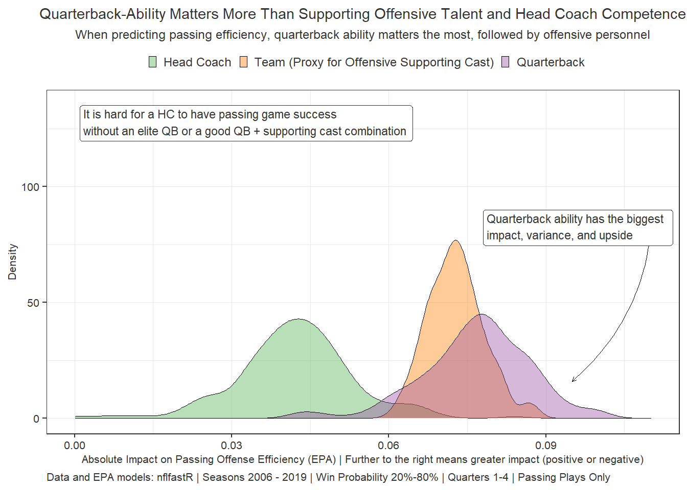

Mixed-Effects Modeling, bootstrapping, and Cholesky factorization. Open-source and Tutorial. Original Twitter post here.
This is the introduction and will write code in chunks.
print("Hi 2")
## [1] "Hi 2"
